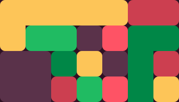
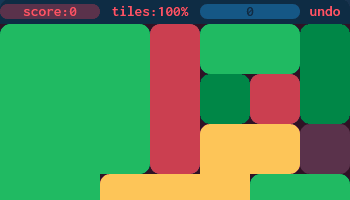

how to play
The basics
clear the field by removing every tile. You do this by clicking on groups (or "clusters") of at least two same-colored tiles.Quick Tip: Right-click anywhere on the field to access the game menu.

hover the image
Earning and Using Points
When you clear groups larger than two tiles, you earn points. These points are shown in the top bar and can be used for special actions: either to remove a single tile or to create a path. Difficulty settings:
Form And Fall offers various difficulty levels that change how points work:
- 1: Unlimited Points - Points accumulate infinitely with every cluster you clear.
- 2: Color-Restricted Removes - You can only use points to remove tiles of the same color as your last cleared cluster.
- 3: Color-Limited Max Points - Your maximum points are capped by the number of different colors currently on the field.
- 4: Limited Points & Removes - Combines the restrictions of difficulty 2 (removes limited by last cluster's color) and difficulty 3 (max points limited by colors).
- 5: No Points - You won't earn any points for removing tiles.
Understanding Paths:
Paths allow you to connect tiles and create larger clusters for bigger clears. While paths themselves don't contribute to your score and are marked by dotted tiles, they are a powerful tool!
In "active" mode, each path cost 1 point. While "unlocked" its free.
To create a path:
- 1: Click an empty space next to a tile.
- 2: Then, click another empty space next to a tile of the same color.
- 3: If a route exists between them, a path will automatically generate.
You can also click the selector on a tile to "lock" either the start or end point of your path. This lets you experiment with different routes or even switch colors to plan your moves.
Special Tiles
Some levels feature unique tiles:Fixed Tiles: These tiles will not fall, but you don't need to clear them to win, but strategizing around them is key.

Locked Tiles: These tiles do fall but cannot be directly removed. However, you can convert them into regular tiles if they are above a marked line, or at any time if you've set them to "unlocked" in the game options.
About the game
Second tile is a free to play html5 browser game written in javascript as a hobby project.